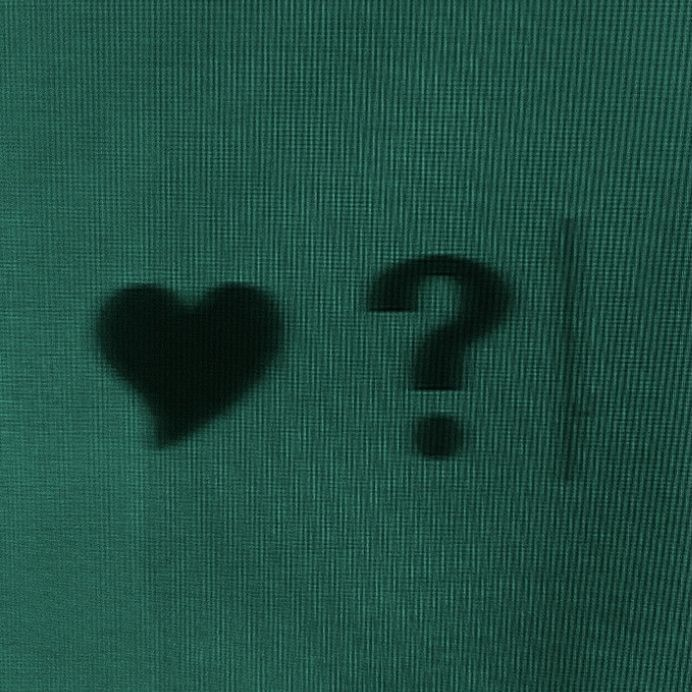
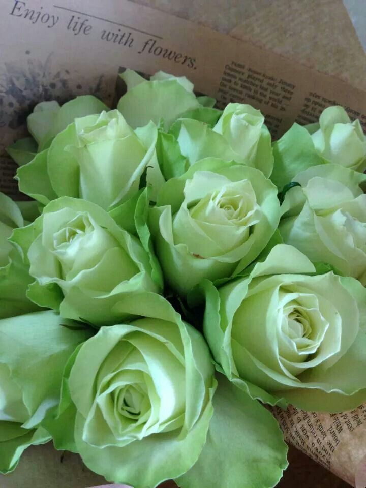

there's this person i know who reminds me of green. not in a way i can fully explain and i've tried. it's not a mood exactly and it's not just an aesthetic thing. it's more like a quality. the way green feels when it's the right shade in the right light. calm but quietly alive. present without asking anything from you. the kind of colour that doesn't announce itself but changes the whole feel of a room just by being in it.
i think it started with a dress she wore once. i saw it and i had to genuinely stop and recalibrate. like okay. noted. this is not a regular person. this is someone who exists at a different frequency and doesn't seem to know it. i wanted to send pictures to everyone i know and say look. just look. but i don't think she'd have understood why i was making such a fuss. that's kind of the thing about her.
her name is Divine and she is exactly that.
she's optimistic in the real way. not the performed kind. not the kind that lives in instagram captions about choosing joy and soft life aesthetics. the kind that comes from actually believing at a foundational level, not as a coping mechanism, that things can be good. that people are mostly trying. that the world has more warmth in it than the news would have you think. that kind of optimism is rarer than people admit. most of us are optimistic in theory and quietly exhausted in practice. we say we believe things will work out while privately preparing for them not to. Divine doesn't carry it like that. she carries it like a decision she made about the world a long time ago and hasn't seen enough reason to revisit.
she's political too. and smart in the way that makes conversation feel like it's going somewhere. she has opinions and she can defend them and she's curious about yours in a way that feels genuine rather than polite. she grew up in one of those homes you can feel the warmth of even secondhand. the kind of family that explains a lot about why a person turns out the way they do. grounded. loving. the kind of background that gives you roots instead of weight. meeting her and hearing about her family made me understand her better almost immediately. some people are who they are despite where they came from. Divine is who she is because of it.



i should also mention, for full transparency and historical accuracy, that when i first messaged her on WhatsApp she took approximately six months to reply.
and then six more months to reply to the second message.
i am not exaggerating. i wish i were. i checked.
i'm not holding it against her. clearly. because the moment we actually started talking properly i forgot about the wait almost completely. that's what happens when a conversation is good enough. the timeline dissolves. you stop caring about how long it took to get there and you just become grateful that you're there at all. there's something she does in conversation that makes you feel like you have her full attention. like what you're saying is actually landing somewhere rather than just being received and filed away. it's not a common thing. i notice when people don't do it. i definitely noticed when she did.
she's also funny in the way that sneaks up on you. not performing humour. just genuinely seeing things at a slightly unexpected angle and saying so. the kind of person who makes a comment under her breath that's more interesting than the main conversation.
she doesn't fully know how beautiful she is yet. i've noticed that about her. she'll receive a compliment and something in her face does this small uncertain thing, like she's not sure it applies to her specifically. like maybe you meant someone else or you're being generous or the light was just particularly good that day. it doesn't apply to her like a maybe. it applies completely. but that's the kind of thing a person has to arrive at on their own schedule. you can't argue someone into knowing their worth. you can only keep telling the truth and trust that it accumulates into something she believes eventually.
meeting Divine has been one of the genuinely lovely things that's happened to me in a season that has had a lot going on in it. new friendships at this stage of life hit differently. you're more aware of what you're looking for. more aware of what you're not willing to settle for. and every once in a while someone shows up who makes you think oh. this is what it's supposed to feel like. easy and interesting and warm without any of the performance.
green. calm. alive. present.
that's her.
i'm glad the second message eventually got a reply.
← Back to Blog